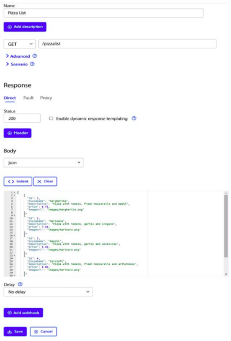
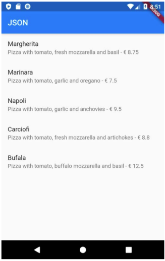
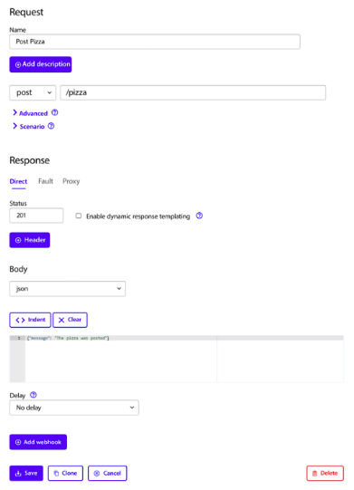
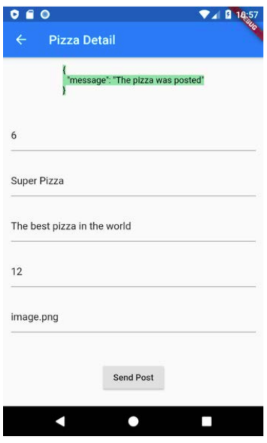
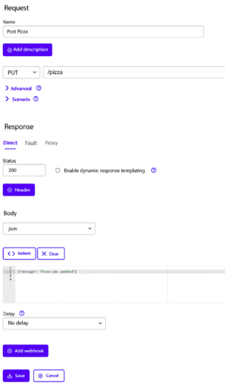

Terakhir diperbarui: 24 November 2025
Penulis: Habibie Ed Dien
Pada codelab ini, Anda akan mempelajari tentang RESTful API di Flutter beserta contoh penggunaannya. Cara kerja, manfaat, dan cara menggunakan RESTful API ke dalam project flutter.
Video singkat berikut menjelaskan tentang fetching data di Flutter. Silakan simak dan pahami!
Setelah menyelesaikan codelab ini Anda akan mampu untuk:
Berikut merupakan sumber daya yang diperlukan untuk menyelesaikan praktikum ini:
API RESTful (atau layanan web RESTful) adalah layanan backend yang menyediakan data untuk aplikasi Anda (frontend atau client), dengan tujuan memungkinkan operasi CRUD (Create, Read, Update, dan Delete) pada data.
Komunikasi ini dilakukan menggunakan protokol HTTP dan serangkaian aksi standar yang disebut verbs. Data yang ditransfer biasanya dalam format JSON.
Empat verb utama yang digunakan adalah:
Materi Anda selanjutnya berfokus pada cara mendesain klien HTTP untuk melakukan operasi CRUD ini di Flutter.
Sebagian besar aplikasi seluler bergantung pada data yang berasal dari sumber eksternal. Bayangkan aplikasi untuk membaca buku, menonton film, berbagi foto dengan teman, membaca berita, atau menulis email: semua aplikasi ini menggunakan data yang diambil dari sumber eksternal. Saat aplikasi mengonsumsi data eksternal, biasanya ada layanan backend yang menyediakan data tersebut untuk aplikasi: layanan web atau API web.
Yang terjadi adalah aplikasi Anda (frontend atau klien) terhubung ke layanan web melalui HTTP dan meminta beberapa data. Layanan backend kemudian merespons dengan mengirimkan data ke aplikasi, biasanya dalam format JSON atau XML.
Untuk codelab ini, kita akan membuat aplikasi yang membaca dan menulis data dari layanan web. Karena membuat API web berada di luar ruang lingkup codelab ini, kita akan menggunakan layanan mock, yang disebut Wire Mock Cloud, yang akan mensimulasikan perilaku layanan web nyata, tetapi akan sangat mudah untuk disiapkan dan digunakan.
Untuk mengikuti codelab ini, perangkat Anda memerlukan koneksi internet untuk mengambil data dari layanan web.
Dalam codelab ini, kita akan mensimulasikan layanan web menggunakan Wire Mock Cloud dan membuat aplikasi yang membaca data dari layanan mock. Kita akan mulai dengan menyiapkan layanan baru:

flutter pub add httpimport 'dart:io';
import 'package:http/http.dart' as http;
import 'dart:convert';
import 'pizza.dart';
class HttpHelper {
final String authority = '02z2g.mocklab.io';
final String path = 'pizzalist';
Future<List<Pizza>> getPizzaList() async {
final Uri url = Uri.https(authority, path);
final http.Response result = await http.get(url);
if (result.statusCode == HttpStatus.ok) {
final jsonResponse = json.decode(result.body);
//provide a type argument to the map method to avoid type
//error
List<Pizza> pizzas =
jsonResponse.map<Pizza>((i) =>
Pizza.fromJson(i)).toList();
return pizzas;
} else {
return [];
}
}
}Future<List<Pizza>> callPizzas() async {
HttpHelper helper = HttpHelper();
List<Pizza> pizzas = await helper.getPizzaList();
return pizzas;
} Widget build(BuildContext context) {
return Scaffold(
appBar: AppBar(title: const Text('JSON')),
body: FutureBuilder(
future: callPizzas(),
builder: (BuildContext context, AsyncSnapshot<List<Pizza>>
snapshot) {
if (snapshot.hasError) {
return const Text('Something went wrong');
}
if (!snapshot.hasData) {
return const CircularProgressIndicator();
}
return ListView.builder(
itemCount: (snapshot.data == null) ? 0 : snapshot.
data!.length,
itemBuilder: (BuildContext context, int position) {
return ListTile(
title: Text(snapshot.data![position].pizzaName),
subtitle: Text(snapshot.data![position].
description +
' - € ' +
snapshot.data![position].price.toString()),
);
});
}),
);
}
Gambar tersebut merupakan tangkapan layar dari daftar item yang diambil melalui HTTP, menampilkan ListView dengan nama pizza dan deskripsinya.
Kita sekarang hanya memiliki satu metode yang menggunakan kelas HttpHelper. Seiring bertumbuhnya aplikasi, kita mungkin perlu memanggil HttpHelper beberapa kali di bagian berbeda dari aplikasi, dan akan menjadi pemborosan sumber daya untuk membuat banyak instance kelas setiap kali perlu menggunakan metode dari kelas tersebut.
Salah satu cara untuk menghindari ini adalah dengan menggunakan konstruktor factory dan pola singleton: ini memastikan Anda hanya menginstansiasi kelas sekali. Ini berguna setiap kali hanya satu objek yang diperlukan di aplikasi Anda dan ketika Anda perlu mengakses sumber daya yang ingin Anda bagikan di seluruh aplikasi.
Di file httphelper.dart, tambahkan kode berikut ke kelas HttpHelper, tepat di bawah deklarasi:
static final HttpHelper _httpHelper = HttpHelper._internal();
HttpHelper._internal();
factory HttpHelper() {
return _httpHelper;
}Ada beberapa pola di Dart dan Flutter yang memungkinkan Anda berbagi layanan dan logika bisnis di aplikasi Anda, dan pola singleton hanya salah satunya. Pilihan lain termasuk Dependency injection, Inherited Widgets, dan Provider serta Service Locators. Ada artikel menarik tentang pilihan berbeda yang tersedia di Flutter di http://bit.ly/flutter_DI
Pada praktikum ini, Anda akan belajar bagaimana melakukan aksi POST pada layanan web. Ini berguna setiap kali Anda terhubung ke layanan web yang tidak hanya menyediakan data tetapi juga memungkinkan Anda untuk mengubah informasi yang disimpan di sisi server. Biasanya, Anda harus memberikan beberapa bentuk otentikasi ke layanan, tetapi untuk codelab ini, karena kita menggunakan layanan mock, ini tidak diperlukan.
Untuk melakukan aksi POST pada layanan web, ikuti langkah-langkah berikut:

Tangkapan layar dari WireMock Post Pizza stub, menampilkan konfigurasi stub dengan nama, verb POST, path, status 201, dan body respons JSON.
Future<String> postPizza(Pizza pizza) async {
const postPath = '/pizza';
String post = json.encode(pizza.toJson());
Uri url = Uri.https(authority, postPath);
http.Response r = await http.post(
url,
body: post,
);
return r.body;
}import 'package:flutter/material.dart';
import 'pizza.dart';
import 'httphelper.dart';
class PizzaDetailScreen extends StatefulWidget {
const PizzaDetailScreen({super.key});
@override
State<PizzaDetailScreen> createState() => _PizzaDetailScreenState();
}
class _PizzaDetailScreenState extends State<PizzaDetailScreen> {
@override
Widget build(BuildContext context) {
return Placeholder();
}
}final TextEditingController txtId = TextEditingController();
final TextEditingController txtName = TextEditingController();
final TextEditingController txtDescription = TextEditingController();
final TextEditingController txtPrice = TextEditingController();
final TextEditingController txtImageUrl = TextEditingController();
String operationResult = '';@override
void dispose() {
txtId.dispose();
txtName.dispose();
txtDescription.dispose();
txtPrice.dispose();
txtImageUrl.dispose();
super.dispose();
}return Scaffold(
appBar: AppBar(
title: const Text('Pizza Detail'),
),
body: Padding(
padding: const EdgeInsets.all(12),
child: SingleChildScrollView(
child: Column(children: []),
)));Text(
operationResult,
style: TextStyle(
backgroundColor: Colors.green[200],
color: Colors.black),
),
const SizedBox(
height: 24,
),
TextField(
controller: txtId,
decoration: const InputDecoration(hintText: 'Insert ID'),
),
const SizedBox(
height: 24,
),
TextField(
controller: txtName,
decoration: const InputDecoration(hintText: 'Insert Pizza Name'),
),
const SizedBox(
height: 24,
),
TextField(
controller: txtDescription,
decoration: const InputDecoration(hintText: 'Insert Description'),
),
const SizedBox(
height: 24,
),
TextField(
controller: txtPrice,
decoration: const InputDecoration(hintText: 'Insert Price'),
),
const SizedBox(
height: 24,
),
TextField(
controller: txtImageUrl,
decoration: const InputDecoration(hintText: 'Insert Image Url'),
),
const SizedBox(
height: 48,
),
ElevatedButton(
child: const Text('Send Post'),
onPressed: () {
postPizza();
}) Future postPizza() async {
HttpHelper helper = HttpHelper();
Pizza pizza = Pizza();
pizza.id = int.tryParse(txtId.text);
pizza.pizzaName = txtName.text;
pizza.description = txtDescription.text;
pizza.price = double.tryParse(txtPrice.text);
pizza.imageUrl = txtImageUrl.text;
String result = await helper.postPizza(pizza);
setState(() {
operationResult = result;
});
}floatingActionButton: FloatingActionButton(
child: const Icon(Icons.add),
onPressed: () {
Navigator.push(
context,
MaterialPageRoute(
builder: (context) => const PizzaDetailScreen()),
);
}),
Tangkapan layar dari layar Pizza Detail dengan pesan sukses "The pizza was posted" setelah menekan tombol Send Post.
Layanan web (khususnya, layanan web RESTful) bekerja dengan verb. Ada empat aksi utama (atau verb) yang umumnya Anda gunakan ketika data terlibat: GET, POST, PUT, dan DELETE.
Dalam praktikum 2 ini, kita menggunakan POST, yang merupakan verb yang secara konvensional digunakan ketika aplikasi meminta server web untuk menyisipkan potongan data baru.
Inilah sebabnya kita harus menginstruksikan layanan web mock untuk menerima POST di alamat /pizza terlebih dahulu, sehingga dapat mencoba mengirim beberapa data ke sana dan membuatnya merespons dengan pesan sukses.
Setelah membuat stub POST di Wiremock, kita membuat metode postPizza, untuk benar-benar melakukan panggilan ke server. Karena ini mengambil string JSON, kita menggunakan metode json.encode untuk mengubah Map menjadi JSON.
Dalam praktikum ini, Anda akan belajar cara melakukan aksi PUT pada layanan web. Ini berguna ketika aplikasi Anda perlu mengedit data yang ada di layanan web.
Untuk melakukan aksi PUT pada layanan web, ikuti langkah-langkah berikut:

Tangkapan layar dari WireMock Put Pizza stub, menampilkan konfigurasi stub dengan nama, verb PUT, path, status 200, dan body respons JSON.
Future<String> putPizza(Pizza pizza) async {
const putPath = '/pizza';
String put = json.encode(pizza.toJson());
Uri url = Uri.https(authority, putPath);
http.Response r = await http.put(
url,
body: put,
);
return r.body;
}final Pizza pizza;
final bool isNew;
const PizzaDetailScreen(
{super.key, required this.pizza, required this.isNew});@override
void initState() {
if (!widget.isNew) {
txtId.text = widget.pizza.id.toString();
txtName.text = widget.pizza.pizzaName;
txtDescription.text = widget.pizza.description;
txtPrice.text = widget.pizza.price.toString();
txtImageUrl.text = widget.pizza.imageUrl;
}
super.initState();
}Future savePizza() async {
...
final result = await (widget.isNew
? helper.postPizza(pizza)
: helper.putPizza(pizza));
setState(() {
operationResult = result;
});
}return ListTile(
title: Text(pizzas.data![position].pizzaName),
subtitle: Text(pizzas.data![position].description +
' - € ' +
pizzas.data![position].price.toString()),
onTap: () {
Navigator.push(
context,
MaterialPageRoute(
builder: (context) => PizzaDetailScreen(
pizza: pizzas.data![position], isNew: false)),
);floatingActionButton: FloatingActionButton(
child: Icon(Icons.add),
onPressed: () {
Navigator.push(
context,
MaterialPageRoute(
builder: (context) => PizzaDetailScreen(
pizza: Pizza(),
isNew: true,
)),
);
}),
);Praktikum ini cukup mirip dengan yang sebelumnya, tetapi di sini menggunakan PUT, verb yang secara konvensional digunakan ketika aplikasi meminta server web untuk memperbarui potongan data yang ada.
Inilah sebabnya harus menginstruksikan layanan web mock untuk menerima PUT di alamat /pizza, sehingga dapat mencoba mengirim beberapa data ke sana.
Perhatikan bahwa alamat /pizza persis sama dengan yang diatur untuk POST, satu-satunya yang berubah adalah verb. Dengan kata lain, Anda dapat melakukan aksi berbeda di URL yang sama, tergantung pada verb yang Anda gunakan.
Setelah membuat stub PUT di Wiremock, kita membuat metode putPizza, yang bekerja seperti metode postPizza, kecuali untuk verb-nya.
Untuk membuat pengguna memperbarui Pizza yang ada, kita menggunakan layar yang sama, PizzaDetail, tetapi juga meneruskan objek Pizza yang ingin diperbarui dan nilai Boolean yang memberi tahu apakah objek Pizza adalah objek baru (sehingga harus menggunakan POST) atau yang ada (sehingga harus menggunakan PUT).
Dalam praktikum ini, Anda akan belajar cara melakukan aksi DELETE pada layanan web. Ini berguna ketika aplikasi Anda perlu menghapus data yang ada di layanan web.
Untuk melakukan aksi DELETE pada layanan web, ikuti langkah-langkah berikut:
Future<String> deletePizza(int id) async {
const deletePath = '/pizza';
Uri url = Uri.https(authority, deletePath);
http.Response r = await http.delete(
url,
);
return r.body;
}return ListView.builder(
itemCount: (pizzas.data == null) ? 0 : pizzas.data.length,
itemBuilder: (BuildContext context, int position) {
return Dismissible(
key: Key(position.toString()),
onDismissed: (item) {
HttpHelper helper = HttpHelper();
pizzas.data!.removeWhere(
(element) => element.id == pizzas.data![position].id);
helper.deletePizza(pizzas.data![position].id!);
},
child: ListTile(...Praktikum ini cukup mirip dengan dua praktikum sebelumnya, tetapi di sini, menggunakan DELETE, verb yang secara konvensional digunakan ketika aplikasi meminta server web untuk menghapus potongan data yang ada.
Inilah sebabnya harus menginstruksikan layanan web mock untuk menerima DELETE di alamat /pizza, sehingga dapat mencoba mengirim beberapa data ke sana dan itu akan merespons dengan pesan sukses.
Setelah membuat stub DELETE di Wiremock, kita membuat metode deletePizza, yang bekerja seperti metode postPizza dan putPizza; itu hanya memerlukan ID pizza untuk menghapusnya.
Untuk membuat pengguna menghapus Pizza yang ada, kita menggunakan widget Dismissible, yang digunakan ketika Anda ingin swipe elemen (kiri atau kanan) untuk menghapusnya dari layar.
Selamat Anda telah menyelesaikan Codelab ini. Anda telah mempelajari terkait Restful API di Flutter dan contoh penggunaannya.
Dalam codelab terakhir ini, Anda telah melihat beberapa cara untuk mengelola data di aplikasi Flutter dan membaca serta menulis data ke layanan web.
Pertama, Anda telah melihat proses mengonversi model Dart menjadi format JSON, format data yang ringan dan diterima secara universal.
Anda juga telah melihat cara menserialisasi dan mendeserialisasi objek Dart ke dan dari JSON serta belajar cara menangani data JSON yang tidak kompatibel dengan model aplikasi Anda, dengan beberapa strategi untuk menyesuaikan dan mengatasinya.
Anda telah menggunakan SharedPreferences dari pekan lalu, sistem penyimpanan key-value sederhana yang memungkinkan menyimpan jumlah data kecil. Anda kemudian telah melihat cara menggunakan SecureStorage sebagai metode untuk menyimpan data sensitif seperti kata sandi.
Anda belajar cara mengakses filesystem dengan memanfaatkan paket path_provider, yang memungkinkan pengembang untuk mengambil lokasi di filesystem perangkat. Anda telah melihat cara membuat, membaca, dan menulis file di perangkat Anda.
Mengalihkan fokus ke komunikasi dengan layanan web, Anda telah belajar tentang desain klien HTTP dan melihat cara mengambil data dari layanan web serta mengirim data ke server menggunakan verb POST, PUT, dan DELETE.
Singkatnya, dalam codelab ini, Anda mendapatkan pandangan mendalam tentang penanganan JSON, persistensi data, penyimpanan aman, dan komunikasi dengan internet. Anda sekarang telah dilengkapi dengan pengetahuan dan keterampilan yang diperlukan untuk mengelola data secara efektif dan berkomunikasi dengan server remote di aplikasi Flutter Anda.
Silakan cek beberapa sumber belajar lainnya...